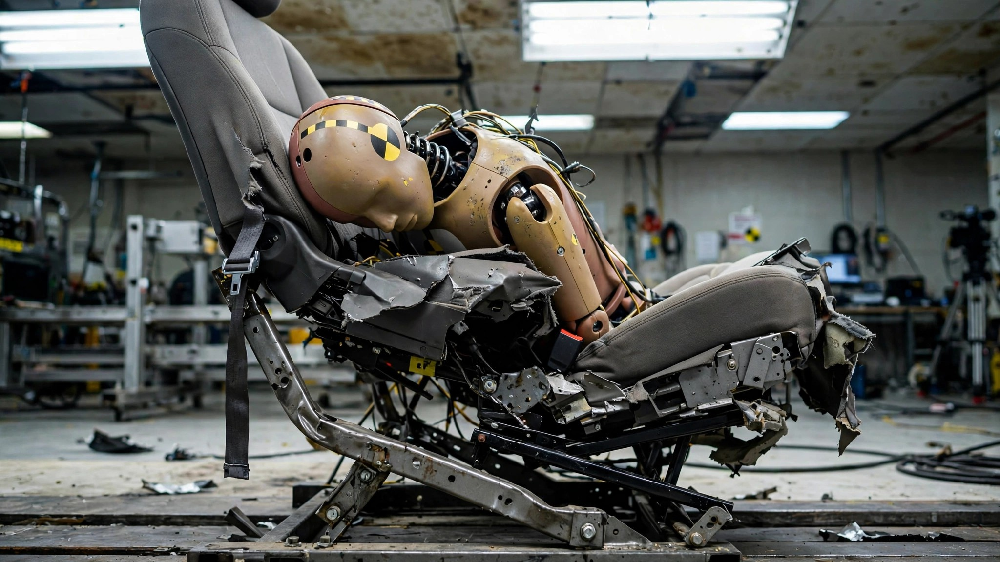

A Seat Broke Loose Mid-Crash for the First Time in 29 Years. Euro NCAP Had No Way to Dock a Star.

In September 2025, Euro NCAP ran the MG 3 through its frontal offset crash test. Midway through the impact, something happened that their engineers had never recorded in 29 years of testing hundreds of vehicles: the driver's seat latch failed, and the seat twisted sideways.[1]
The seat slid 111.5 millimeters forward on one rail. That movement fed directly into the dummy's body: leg forces spiked to a "poor" rating, and the head bottomed out the airbag and struck the steering wheel, dropping head protection to "adequate."[2]
MG's first response was to blame the test setup. Euro NCAP had checked the latch before impact, as standard procedure requires, and had the documentation to prove it.[1] MG dropped the argument and committed to redesigning the latch from August 2025 onward.
What makes this interesting is not the failure itself, because seats can break. What makes it interesting is what happened next: nothing, structurally, could change in the rating. Euro NCAP's scoring system has no mechanism to override a star count for a component failure.[1] The crash-avoidance scores, bolstered by recently added driver-assistance systems, pulled the overall rating to four stars. The organization's own programme director, Dr. Aled Williams, responded by telling consumers to buy a different car.[3]
Read that again. The body that rated it four stars simultaneously told you not to buy it.
This is not a problem with the MG 3. MG launched a recall in November 2025, fixed over 12,000 vehicles by April 2026, and expects 90 percent completion by November.[4] No real-world incidents have been reported, and Euro NCAP itself verified that the redesigned latch eliminates the risk. As recalls go, this one is working the way it should.
The problem is the instrument. Star ratings are the dominant shorthand consumers use to evaluate vehicle safety. When Global NCAP tested the made-in-India Nissan Almera in Africa in 2021, the driver's seat detached the same way and the car still earned three stars.[5] Euro NCAP has announced a sweeping 2026 protocol revision built around four safety stages and a scoring overhaul,[6] but whether that revision includes a hard override for catastrophic component failure has not been publicly confirmed.
If you are shopping for a supermini in Europe, the MG 3 built after August 2025 has a verified fix. If you own an earlier model, contact your dealer for the free recall repair. The deeper question is whether you should trust any star rating that cannot distinguish between "passed the test" and "a load-bearing safety component failed during the test." Euro NCAP's answer, for now, is to put an asterisk next to the stars and hope you read the footnote.
Sources & References
- Euro NCAP, “MG 3 receives four stars – but suffers rare and serious seat failure in Euro NCAP crash test,” September 2025. euroncap.com
- Jalopnik, “MG 3 Driver’s Seat Detached During Crash Test, A First In 29 Years Of Euro NCAP Testing,” September 2025. jalopnik.com
- Auto Express, “Get ‘troubling’ MG3 seat latch flaw fixed, Euro NCAP urges owners,” May 2026. autoexpress.co.uk
- Euro NCAP, “MG3 owners urged to complete safety recall repair,” May 2026. euroncap.com
- Team-BHP, “Euro NCAP admits ‘gap in scoring framework’ can miss critical component failures,” September 2025. team-bhp.com
- Euro NCAP, “Euro NCAP announces 2026 protocol changes to tackle modern driving risks.” euroncap.com